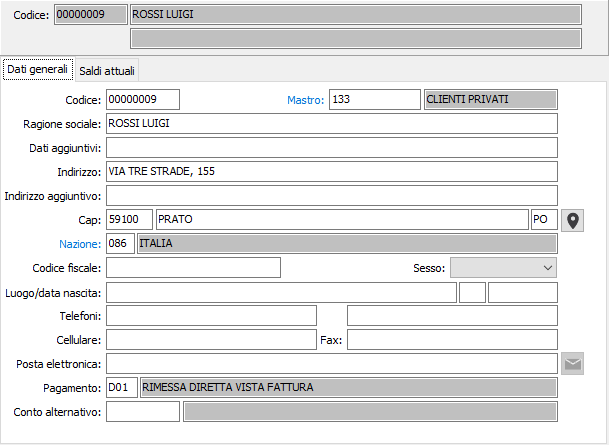

Il pulsante consente di ricercare le coordinate geografiche dell'indirizzo completo del cliente; è necessaria una connessione internet e viene aperto il browser web utilizzando Google Maps.
Il pulsante consente di ricercare le coordinate geografiche dell'indirizzo completo del cliente; è necessaria una connessione internet e viene aperto il browser web utilizzando Google Maps.Dati generali

CODICE: inserire il codice del cliente privato. Su questo campo è attiva la funzione di ricerca (F9) relativa ai clienti privati.
MASTRO: codice alfanumerico di otto caratteri per inserire il codice del mastro di riferimento. Sul campo sono attive le funzioni di ricerca (F9) sulla tabella stessa.
RAGIONE SOCIALE: campo alfanumerico per inserire la ragione sociale del cliente privato.
DATI AGGIUNTIVI: campo alfanumerico per inserire il seguito della ragione sociale, nel caso in cui il campo precedente non sia in grado di contenerla completamente.
INDIRIZZO: campo alfanumerico per inserire l'indirizzo del cliente privato.
INDIRIZZO AGGIUNTIVO: campo alfanumerico per inserire l’ulteriore specifica dell'indirizzo del cliente privato.
C.A.P.: campo alfanumerico per inserire il codice di avviamento postale del cliente privato. Sul campo è attiva la ricerca (F9) sulla tabella dei codici di avviamento postale. In questo caso è possibile acquisire attraverso il Cap anche la città e la provincia del cliente privato.
CITTA': campo alfanumerico per inserire la città del cliente privato.
PROVINCIA: campo alfanumerico di due caratteri per indicare la sigla della provincia del cliente privato. La provincia è elemento di selezione per le stampe selettive dei clienti privati. Sul campo è attiva la ricerca (F9) sulla tabella province.
Il pulsante consente di ricercare le coordinate geografiche dell'indirizzo completo del cliente; è necessaria una connessione internet e viene aperto il browser web utilizzando Google Maps.
CODICE NAZIONE: codice della nazione di appartenenza del cliente privato. Sul campo è attiva la ricerca (F9) sulla tabella nazioni.
CONTO ALTERNATIVO: campo codice in cui può essere memorizzato un codice cliente sostitutivo di quello in esame se lo stato anagrafica del cliente attivo è uguale a 9. Su questo campo è attiva la ricerca (F9) sulla tabella clienti stessa.
TELEFONI: campi alfanumerici di 25 caratteri per descrivere un numero telefonico.
CELLULARE: campo alfanumerico di 25 caratteri per descrivere un numero telefonico.
FAX: campo alfanumerico di 25 caratteri per descrivere un numero di fax.
POSTA ELETTRONICA: campo alfanumerico di 50 caratteri per descrivere un indirizzo e-mail. L’informazione può essere utilizzata da alcuni programmi per l’inoltro di documenti tramite posta elettronica.

 Il pulsante consente di inviare una email all'indirizzo email; si apre una finestra dove viene precompilato l'indirizzo del destinatario ed è possibile indicare un destinatario per conoscenza, l'oggetto, il testo del messaggio ed eventualmente la richiesta di conferma di lettura; è presente anche un pulsante Allegati che consente di aggiungere allegati di qualsiasi tipo.
Il pulsante consente di inviare una email all'indirizzo email; si apre una finestra dove viene precompilato l'indirizzo del destinatario ed è possibile indicare un destinatario per conoscenza, l'oggetto, il testo del messaggio ed eventualmente la richiesta di conferma di lettura; è presente anche un pulsante Allegati che consente di aggiungere allegati di qualsiasi tipo.
PAGAMENTO: inserire il codice del pagamento utilizzato dal cliente, che verrà proposto automaticamente in fase di emissione documenti. Sul campo sono attive le funzioni di ricerca (F9) e manutenzione (CTRL+W) sulla tabella stessa.
LUOGO/DATA NASCITA - SESSO: indicare i dati relativi al cliente.